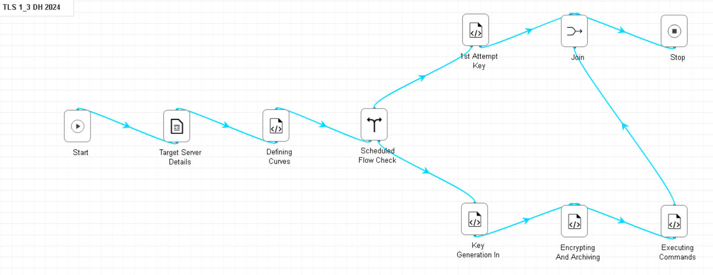
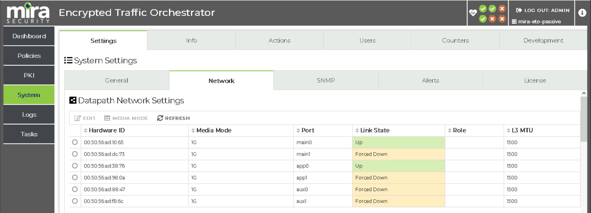
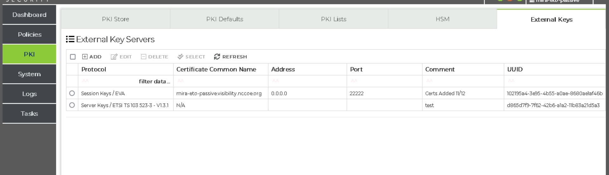
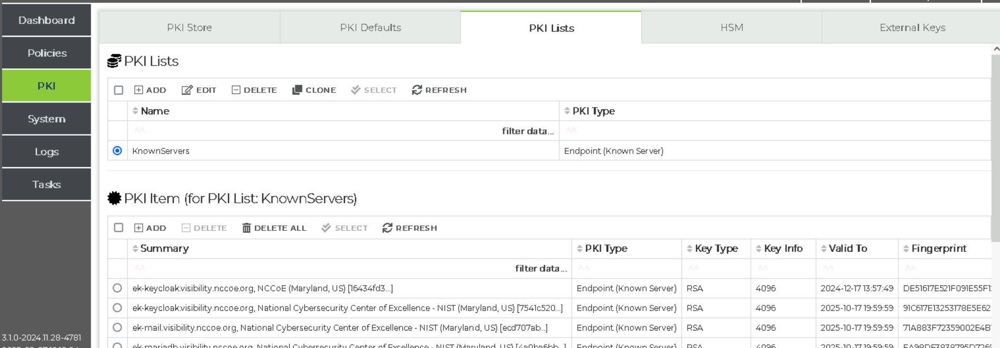
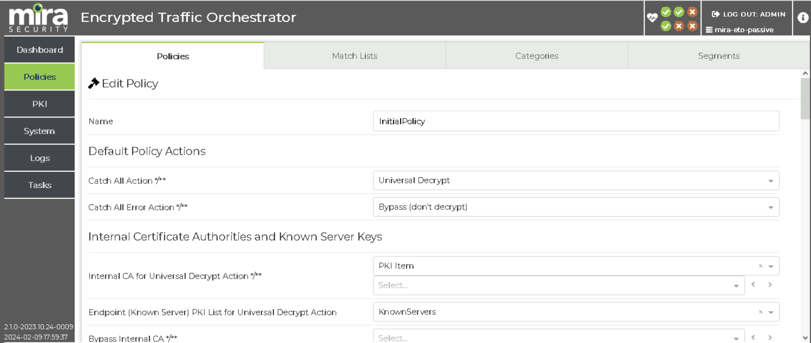
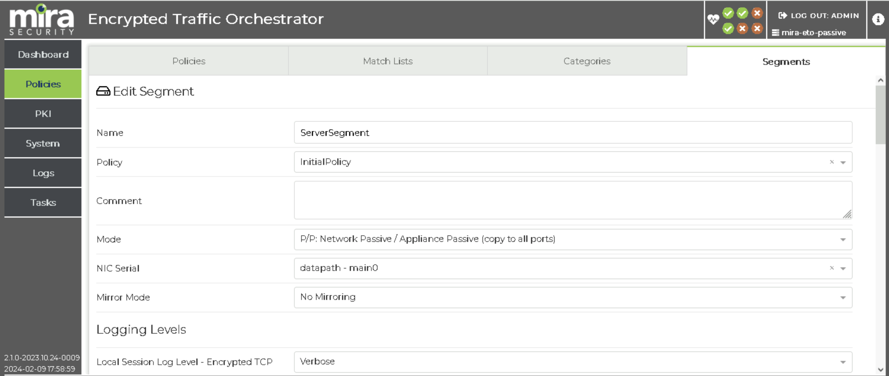
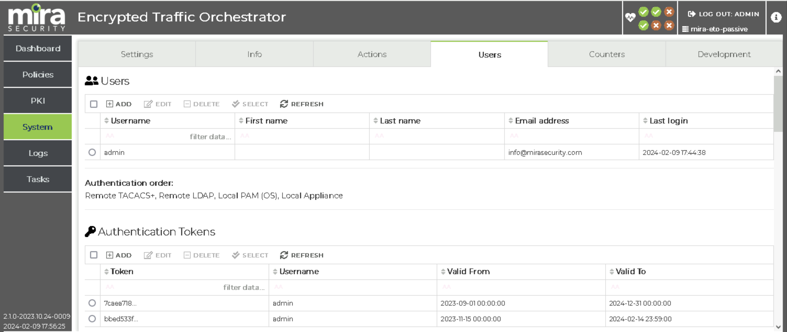

E.2 Architecture Implementation: Passive Inspection Using Bounded-lifetime DH Keys#
AppViewX for Bounded-Lifetime Server Key Governance#
This build uses the AppViewX product to manage the creation, deployment, and retrieval of the bounded-lifetime ephemeral Diffie-Hellman keys used by the managed TLS servers to negotiate TLSv1.3 connections. A single implementation of the AppViewX platform is shared across all three of the builds.
Instantiation of the AppViewX Virtual Appliances#
To support this use case, two AppViewX products are deployed as virtual appliance machines. The main appviewX virtual appliance was created in vSphere from the vendor-supplied virtual appliance (OVF) file. It is provisioned with 8 vCPUs, 32 GB of memory, 250 GB of storage, and two network interfaces. This appliance is leveraged by the other use cases discussed later in the document.
The second virtual appliance, the Software Security Module, was created in vSphere from a separate OVF file supplied by the vendor. It is provisioned with 1 vCPU, 2 GB of memory, 40 GB of storage, and a single network interface. This appliance is only used for the generation, storage, distribution, and retrieval of the bounded-lifetime Diffie-Hellman key pairs that are used by the TLS servers.
AppViewX Appliance Network Configuration#
Interface |
Network |
IP Address |
Purpose |
|---|---|---|---|
1 |
MANAGEMENT |
192.168.10.15 |
Access to the web-based management console and connectivity to other products. |
2 |
HSMNET |
N/A |
Provides connectivity to the hardware security module. |
AppViewX Software Security Module Appliance Network Configuration#
Interface |
Network |
IP Address |
Purpose |
|---|---|---|---|
1 |
MANAGEMENT |
192.168.10.109 |
Connectivity to other products. |
Additional Modules#
The primary appliance was provisioned with the following modules:
Plugin Name |
Plugin Link |
|---|---|
AppViewX_2020.3.FP11.tar.gz |
|
scripts_2020.3.FP11_27Jul2023.tar.gz |
|
appviewx_addons_2020.3.FP11.tar.gz |
|
AppViewX_2020.3.0_Latest_Plugins_01Sep2023_114616.tar.gz |
https://release.appviewx.com/downLoadPluginAll?version=AppViewX_2020.3.0 |
N/A |
https://release.appviewx.com/downLoadAddons?version=AppViewX_2020.3.0 |
Configuration Procedure#
This section describes the configuration of AppViewX to do several things: periodically generate EDH keys, register the keys in the AppViewX Secure Software Module in a location available via SSH. The consumers of these keys include the decryptors and the TLSv1.3 configured servers which use them to form connections. In the case of these configured servers, the local NFR agent will pull the keys via SSH and make them available to the TLS application. Configuring AppViewX to manage the rotation and distribution of bounded-lifetime EDH keys is accomplished by installing two custom workflows through the AppViewX web console.
The figure below shows how to access the workflow library.

Access to AppViewX Workflows#
The figure below shows shows the contents of the workflow for the Diffie-Hellman workflow.
{kind=link}

Diffie-Hellman Key Rotation Workflow#
Additional Configuration Files#
Relevant Configuration Files |
|---|
These files were created as part of the creation of the workflow for this build in AppViewX. This workflow serves the purpose of creating and registering keys with the AppViewX Secure Software module to make those keys available to the servers and decryptors which need them.
MIRA Encrypted Traffic Orchestrator (ETO) for Real-time Decryption Using Bounded-Lifetime EDH Keys#
This build uses the MIRA ETO product to passively decrypt TLSv1.3 network traffic leveraging bounded-lifetime EDH keys on the TLS server. A single implementation of the MIRA ETO product is shared between this build and the Exported Session Key build.
Instantiation of the MIRA ETO Virtual Appliance#
The MIRA ETO virtual machine was created in vSphere from the vendor supplied appliance (OVF) file with three network interfaces.
MIRA ETO Passive Decryptor Network Configuration#
Interface |
Network |
IP Address |
Purpose |
|---|---|---|---|
1 |
MANAGEMENT |
192.168.10.8 |
Access to the web-based management console and connectivity to other products. |
2 |
ENCRYPTED |
N/A Layer 2 connection |
Access to the encrypted network data provided by the network tap. |
3 |
DECRYPTED |
N/A Layer 2 connection |
Access to the network where decryptors output the decrypted traffic. |
The VM was created with a resource allocation including 8 vCPUs, 16 GB of memory, and 75 GB of storage.
The first interface is configured to connect to the lab MANAGEMENT network and provides access to the MIRA ETO web-based management console. The second and third interfaces are configured to connect to the ENCRYPTED and DECRYPTED networks and act as the source of encrypted traffic and destination for the resulting decrypted traffic streams. The assignment of the ENCRYPTED and DECRYPTED network connections to NICs on the virtual appliance is sensitive to the configuration of the appliance.
Configuration Procedure#
This section describes the configuration of Mira ETO to be used as a real-time decryptor using Bounded-Lifetime EDH Keys. In this build, EDH keys are generated by AppViewX, and retrieved via SSH by both the decryptor and the server making use of them. As encrypted traffic is forwarded to one of the network interfaces on Mira ETO, these keys are then used to decrypt that traffic.
Some initial basic configuration of the ETO appliance network connectivity is needed.
Navigate to Server > Settings > Network to configure the appliance network connections. In addition to a management connection, the ETO appliance defines six functional connections by default, named main0, main1, app0, app1, aux0, and aux1.
For both passive decryption uses cases, only the main0 and app0 connections are needed, and the main1, app1, aux0, and aux1 connections are forced to a Link State of Forced Down through the appliance console.
ETO listens for encrypted traffic on the main0 interface and forwards the results of decryption actions to the app0 interface. Using the Ethernet MAC address listed for main0 connection on the web console, the corresponding virtual NIC of the virtual appliance should be configured to connect to the ENCRYPTED network. Similarly, the Ethernet MAC address listed for the app0 connection on the web console should be used to match the corresponding NIC on the virtual appliance.
{kind=link}

Network Configuration#
For ETO to decrypt the traffic associated with managed TLS servers, it also must receive the rotated EDH keys from the key governance platform as those keys are pushed to the managed TLS servers. To receive those keys and enable passive decryption of that server’s traffic, the following steps must be taken within the MIRA ETO web console.
ETO must be configured to manage the received keys by configuring a key server. Navigate to
PKI > External Keys, and clickAdd. SelectMira Security Server Keysas the vendor. Capture the UUID of the key server to use in the AppViewX configuration.
MIRA ETO External Key Server Configuration#
An inventory of the PKI certificates used by the TLS servers must be established. Navigate to
PKI > PKI Lists.Create a new list and upload each server’s TLS PKI certificate and key to the inventory. All of the server certificates for this lab were added to a certificate list namedKnownServers. Traffic using a certificate not in this inventory will not be decrypted.
Inventory of TLS Server Certificates Configuration#
The policies for the encrypted traffic are defined. Navigate to
Policies > Policies, and clickAdd. This policy should have a catch all setting ofuniversal decrypt. The policy’sEndpoint PKI List for Universal Decryption Actionparameter is set to the list of TLS certificates configured earlierKnownServers. In this build, we needed only a single policy to instruct ETO to attempt to decrypt all traffic coming in from appliances on theENCRYPTEDnetwork.
ETO Policy Configuration#
Navigate to
Policies > Segment, and clickAdd. Ensure that the policy previously created is chosen. Since the appliance is receiving a copy of the encrypted traffic and is not deployed as a “bump-in-the-wire” appliance, the segmentModeis set toP/P: Network Passive / Appliance Passive (copy to all ports). OtherModesettings are appropriate for other configurations for wiring the ETO appliance into the network.
ETO Segment Configuration#
The credentials that AppViewX will need to push the server key pairs to ETO must be created. Navigate to
System > Usersand clickAdd Token. Capture the token value to use in the AppViewX configuration. Finally, choose to activate the segment. After this step, traffic received onmain0interface meeting the constraints in the defined policy on the defined segment will be decrypted and forwarded to the app0 interface.
ETO Authentication Token Configuration#
{kind=link}
{kind=link}
{kind=link}
{kind=link}
{kind=link}
Additional Configuration Files#
No additional files needed for this build.
TLS Server Configuration with Not For Radio Using Bounded-Lifetime EDH Keys#
This build uses the Not For Radio EVA product as the Key Management Agent on each TLS server. The build includes two HTTPS servers, a TLSv1.3-enabled instance of the MariaDB database server, and TLSv1.3-enabled instances of Postfix and Dovecot, for SMTP and IMAP connectivity, respectively. The following sections will provide the details of each of these servers, as well as the EVA agent configurations on each.
TestApp Server Configuration#
The TestApp server build started with a standard Ubuntu 20.04.6 LTS virtual machine created with allocations of 2 vCPUs, 16 GB of memory, 50 GB of storage, and 2 network interface cards.
Network Configuration#
Interface |
Network |
Address |
Purpose |
1 |
MANAGEMENT |
192.168.30.13 |
Management access to the server and transfer of session key material to Key Governance Platform. |
2 |
SERVER |
192.168.10.23 |
Connectivity from TLS clients. |
Service Details#
Service |
Version |
Containerized |
|---|---|---|
Nginx |
1.18.0 |
No |
TestApp |
N/A |
Yes |
OpenSSL |
1.1.1f |
No |
Notes#
The web application server consists of an Nginx reverse proxy in front of a Python Flask application running in a Docker container. Docker Community Edition was installed, and the default non-root user was added to the docker OS group. Nginx was not containerized for this build to provide better compatibility with the SSH capability needed for key distribution.
The server was assigned the unique hostname rk-testapp.visibility.nccoe.org. An associated “A” record for the server’s hostname and IP address was recorded in the lab DNS service. The TestApp software was installed using the native “apt” Ubuntu package installer.
First, a PKI certificate and key were created in PEM format using the DigiCert CertCentral service referencing the server’s hostname. The certificate and key were uploaded to the VM and stored in the /certs directory. Additionally, the DigiCert CertCentral CA certificate in PEM format was uploaded to the same folder. Second, TestApp was configured to only listen on the network interface connected to the SERVER network.
Configuration Files#
Nginx is configured to listen for incoming TLSv1.3 connections on the SERVER network. The Key Management Agent receives key material through an SSH connection from the Key Governance Platform over the MANAGEMENT network, authenticated using an SSH key pair. The Nginx reverse proxy is secured with an SSL certificate issued through DigiCert.
eva-openssl.cnfcontains config lines which are included inopenssl.cnf. It details which services should use the EVA agent to retrieve keys from AppViewX and use them in the workflow.eva.confcontains details on how to retrieve these keys.override.confcontains instructions for the system to ensure that the EVA agent is running prior to the affected service.
The Nginx container manages access to a small python application which acts as a web server. The docker files are primarily for ensuring that the service is running.
Certificates location: /certs
Startup Instructions#
Finally, the TestApp service was enabled through the following commands:
docker compose up -d
service nginx start
Mail Server Configuration#
The Mail server build started with a standard Ubuntu 20.04.6 LTS virtual machine created with allocations of 2 vCPUs, 16 GB of memory, 50 GB of storage, and 2 network interface cards.
Network Configuration#
Interface |
Network |
Address |
Purpose |
1 |
MANAGEMENT |
192.168.30.15 |
Management access to the server and transfer of session key material to Key Governance Platform. |
2 |
SERVER |
192.168.10.25 |
Connectivity from TLS clients. |
Service Details#
Service |
Version |
Containerized |
|---|---|---|
Postfix |
3.4.13 |
No |
Dovecot |
1:2.3.7.2 |
No |
OpenSSL |
1.1.1f |
No |
Notes#
The Mail application server consists of a Postfix service and Dovecot service providing SMTP and IMAP capabilities respectively.
The server was assigned the unique hostname rk-mail.visibility.nccoe.org. An associated “A” record for the server’s hostname and IP address was recorded in the lab DNS service. The Mail software was installed using the native “apt” Ubuntu package installer.
First, a PKI certificate and key were created in PEM format using the DigiCert CertCentral service referencing the server’s hostname. The certificate and key were uploaded to the VM and stored in the /home/tlsadmin/certs directory. Additionally, the DigiCert CertCentral CA certificate in PEM format was uploaded to the same folder. Second, Mail was configured to only listen on the network interface connected to the SERVER network.
Configuration Files#
Configuration Files |
|---|
Postfix is configured to listen for incoming TLSv1.3 connections on the SERVER network. The Key Management Agent receives key material through an SSH connection from the Key Governance Platform over the MANAGEMENT network, authenticated using an SSH key pair. The Postfix server is secured with an SSL certificate issued through DigiCert.
eva-openssl.cnfcontains config lines which are included inopenssl.cnf. It details which services should use the EVA agent to retrieve keys from AppViewX and use them in the workflow.eva.confcontains details on how to retrieve these keys.override.confcontains instructions for the system to ensure that the EVA agent is running prior to the affected service.
In addition to the configs listed, it was also necessary to create MX records in the DNS for each mail server present in the build, to ensure that the external mail server could communicate with them. In this case, the following was added to DNS Resolver > General Settings > Custom options ... in the PFSense firewall:
local-data: "rk-mail.visibility.nccoe.org. IN MX 10 ek-mail.visibility.nccoe.org"
Certificates location: /home/tlsadmin/certs
Startup Instructions#
Finally, the Mail service was enabled through the following commands:
# Note that by default these start automatically with system boot.
service postfix start
service dovecot start
Keycloak Server Configuration#
The Keycloak server build started with a standard Ubuntu 20.04.6 LTS virtual machine created with allocations of 2 vCPUs, 16 GB of memory, 50 GB of storage, and 2 network interface cards.
Network Configuration#
Interface |
Network |
Address |
Purpose |
1 |
MANAGEMENT |
192.168.30.12 |
Management access to the server and transfer of session key material to Key Governance Platform. |
2 |
SERVER |
192.168.10.22 |
Connectivity from TLS clients. |
Service Details#
Service |
Version |
Containerized |
|---|---|---|
Nginx |
1.18.0 |
No |
Keycloak |
20 |
Yes |
OpenSSL |
1.1.1f |
No |
Notes#
The Keycloak application server runs within a Docker container, with an Nginx HTTP server acting as a reverse proxy. Docker Community Edition was installed, and the default non-root user was added to the docker OS group. Nginx was not containerized for this build to provide better compatibility with the SSH capability needed for key distribution.
The server was assigned the unique hostname rk-keycloak.visibility.nccoe.org. An associated “A” record for the server’s hostname and IP address was recorded in the lab DNS service. The Keycloak software was installed using the native “apt” Ubuntu package installer.
First, a PKI certificate and key were created in PEM format using the DigiCert CertCentral service referencing the server’s hostname. The certificate and key were uploaded to the VM and stored in the /home/administrator/certs directory. Additionally, the DigiCert CertCentral CA certificate in PEM format was uploaded to the same folder. Second, Keycloak was configured to only listen on the network interface connected to the SERVER network.
Configuration Files#
Configuration Files |
|---|
Nginx is configured to listen for incoming TLSv1.3 connections on the SERVER network. The Key Management Agent receives key material through an SSH connection from the Key Governance Platform over the MANAGEMENT network, authenticated using an SSH key pair. The Nginx reverse proxy is secured with an SSL certificate issued through DigiCert.
eva-openssl.cnfcontains config lines which are included inopenssl.cnf. It details which services should use the EVA agent to retrieve keys from AppViewX and use them in the workflow.eva.confcontains details on how to retrieve these keys.override.confcontains instructions for the system to ensure that the EVA agent is running prior to the affected service.
Once operational, Keycloak was configured with a new realm named “CORP”. Within this realm, a user named “testuser” was provisioned. Additionally, an OpenID Connect Client entry was created to allow authentication for a simple Python test application, as described in the Web Application Server Configuration. The docker files are primarily for ensuring that the service is running.
Certificates location: /home/administrator/certs
Startup Instructions#
Finally, the Keycloak service was enabled through the following commands:
docker compose up -d
service nginx start
MariaDB Server Configuration#
The MariaDB server build started with a standard Ubuntu 20.04.6 LTS virtual machine created with allocations of 2 vCPUs, 16 GB of memory, 50 GB of storage, and 2 network interface cards.
Network Configuration#
Interface |
Network |
Address |
Purpose |
1 |
MANAGEMENT |
192.168.30.14 |
Management access to the server and transfer of session key material to Key Governance Platform. |
2 |
SERVER |
192.168.10.24 |
Connectivity from TLS clients. |
Service Details#
Service |
Version |
Containerized |
|---|---|---|
MariaDB |
11.0.2 |
No |
OpenSSL |
1.1.1f |
No |
Notes#
As none of the currently available MariaDB container images on DockerHub used a version of OpenSSL supported by the Nubeva agent, the MariaDB 11.0.2 software was installed directly on the host VM.
The server was assigned the unique hostname rk-mariadb.visibility.nccoe.org. An associated “A” record for the server’s hostname and IP address was recorded in the lab DNS service. The MariaDB software was installed using the native “apt” Ubuntu package installer.
First, a PKI certificate and key were created in PEM format using the DigiCert CertCentral service referencing the server’s hostname. The certificate and key were uploaded to the VM and stored in the /etc/mysql/certs directory. Additionally, the DigiCert CertCentral CA certificate in PEM format was uploaded to the same folder. Second, MariaDB was configured to only listen on the network interface connected to the SERVER network.
Configuration Files#
Configuration Files |
|---|
MariaDB is configured to listen for incoming TLSv1.3 connections on the SERVER network. The Key Management Agent receives key material through an SSH connection from the Key Governance Platform over the MANAGEMENT network, authenticated using an SSH key pair. MariaDB is secured with an SSL certificate issued through DigiCert.
eva-openssl.cnfcontains config lines which are included inopenssl.cnf. It details which services should use the EVA agent to retrieve keys from AppViewX and use them in the workflow.eva.confcontains details on how to retrieve these keys.override.confcontains instructions for the system to ensure that the EVA agent is running prior to the affected service.
Certificates location: /etc/mysql/certs
Startup Instructions#
Finally, the MariaDB service was enabled through the following commands:
systemctl status enable mariadb
Configuration Procedure#
See configuration of individual TLS servers.
Additional Configuration Files#
See configuration of individual TLS servers.